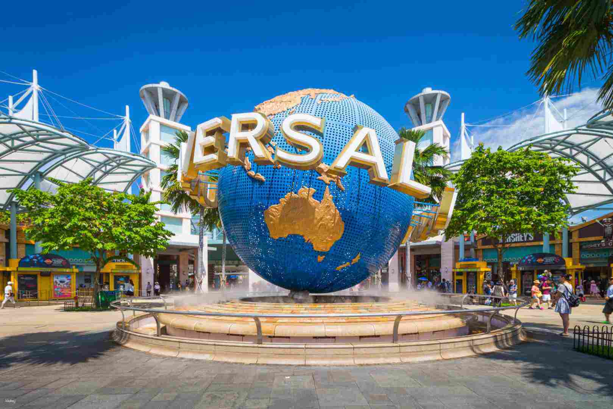
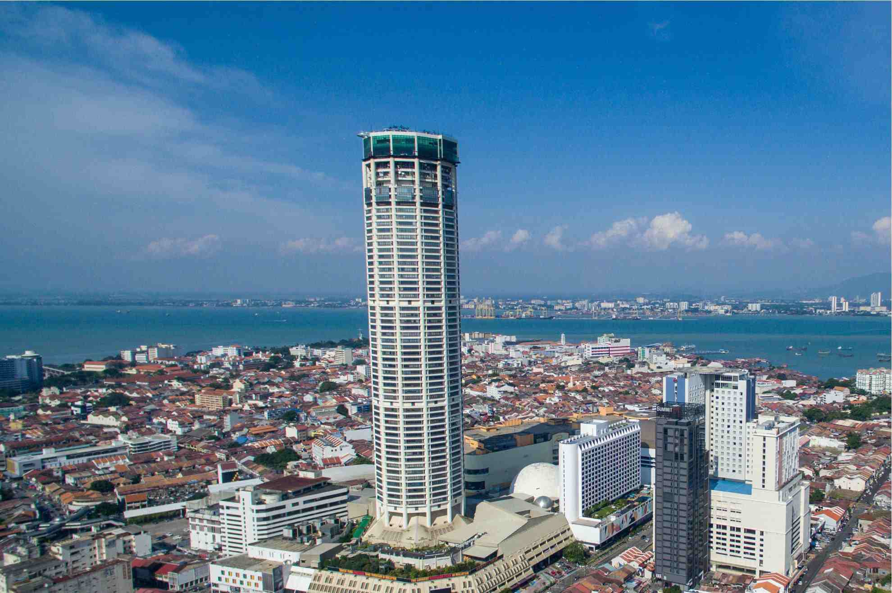

My Visited Places
01
Malacca (2011 & 2022)
Jonker Street and The Stadhuys in Malacca was the first city that I visited in 2011.
02
Singapore (2015 & 2025)
I visited Singapore Universal Studios and Sentosa with my family during the school holiday in 2015.
03
Ipoh (2024)
I visited Ipoh during the 2024 Chinese New Year.
04
Alor Setar (2025 & 2026)
I visited Alor Setar at the first of sem of my university.
05
Pulau Pinang
I have visited fews town in the mainland of Penang and the Georgetown of Penang Islands.


